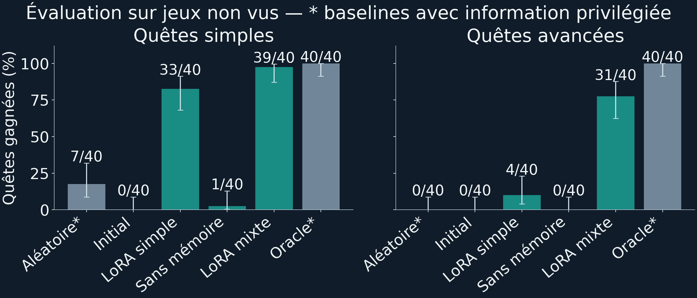

TextWorld · Qwen 0.5B · LoRA
Un petit modèle apprend à jouer
Observer. Choisir une commande. Accomplir une quête.
Exemple illustratif
Une partie textuelle
Observation : une clé au sol
Commande : take key
Nouvelle observation : la clé est dans l'inventaire
π(action | historique, observation)
Une politique avec mémoire
État caché : le monde complet
Observation : le texte accessible
Mémoire : jusqu’à quatre échanges récents
Une transition = un exemple
L'expert construit les exemples
Jeu train
Observation publique + historique
Prochaine commande du solveur
Un problème observé pendant la collecte
Même l’expert peut échouer
Canadian locker ou Canadian limited edition locker ?
Le parseur demande une précision
1 démonstration train rejetée, trace conservée
Prédire la commande experte
L'apprentissage par imitation
Loss = −log P(tokens de l'action | contexte)
Prompt et padding masqués
Récompense utilisée pour évaluer
W reste figée
LoRA : une petite correction
W adaptée = W + (α/r)BA
Rang r = 16
Projections q et v · 1,08 M paramètres entraînés
Par niveau
Des jeux séparés avant la collecte
120 jeux d'entraînement
20 jeux de validation
40 jeux de test réservés
Même modèle initial, mêmes hyperparamètres
Deux entraînements réels sur T4
Simple : 355 exemples · 66 mises à jour · 5 min 13 s
Mixte : 1179 exemples · 219 mises à jour · 15 min 32 s
Checkpoint retenu par loss de validation
Le fine-tuning aide-t-il ?
L'expérience principale
Modèle initial
LoRA sur jeux simples
Mêmes jeux de test, même limite de 30 coups
Niveau 2
Le transfert vers des quêtes longues
Simple : 3 pièces · longueur cible 3
Avancé : 6 pièces · longueur cible 7
Réentraînement sur simple + avancé
Même checkpoint, deux prompts
L'ablation de la mémoire
Jusqu’à 4 échanges récents
Historique vide
Comparer victoire et boucles
La loss ne suffit pas
L'évaluation fait jouer l'agent
Quêtes gagnées + IC 95 %
Coups sur tous les épisodes et sur les réussites
Actions invalides, boucles, troncatures
Barres : victoire ; traits : IC de Wilson à 95 %
Réussite sur des jeux non vus

Trace réelle · LoRA simple · test easy-30000
Une erreur, puis une boucle
take insect from floor → You can’t see any such thing.
go south → déplacement sans l’objet
put insect on mantle → l’objectif reste bloqué
Sur ce benchmark · une seule graine d’entraînement
L’adaptation aide, le transfert reste fragile
Simple : initial 0/40 → LoRA 33/40
Avancé : LoRA simple 4/40 → mixte 31/40
Historique retiré : 1/40 sur les jeux simples
Sources et code consultables
Références
Côté et al. · TextWorld, 2018
Hu et al. · LoRA, 2021
Ross et al. · DAgger, 2011
Qwen2.5 · carte modèle officielle